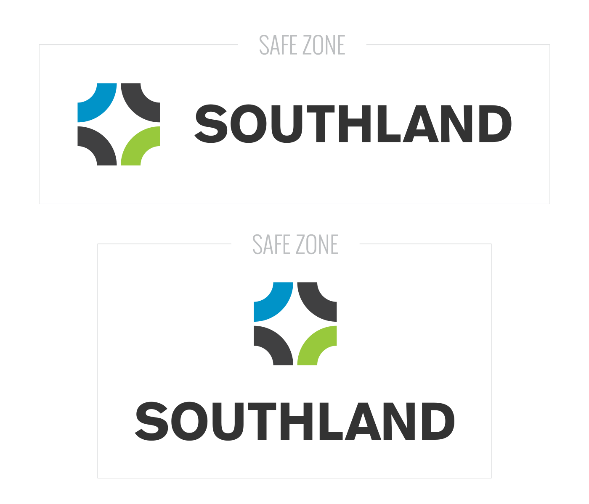
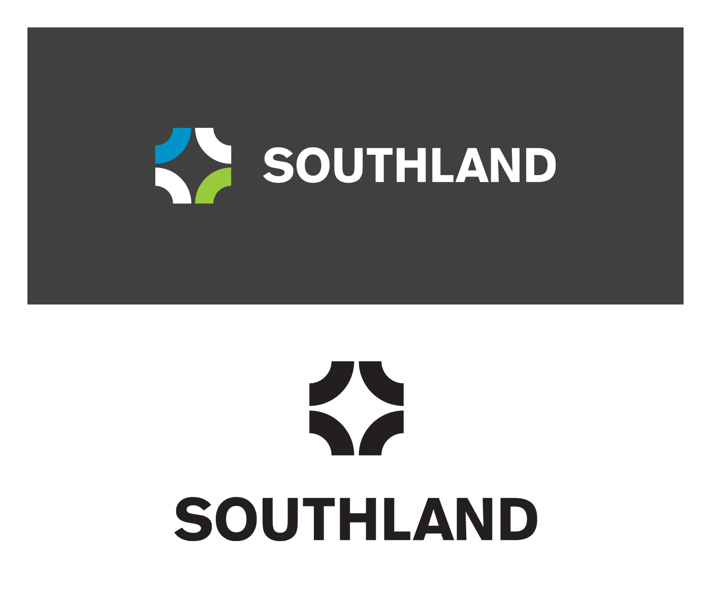

And I’m so happy that God has led you to join our family at Southland. Getting to work and worship here really does make you part of the #BestTeamOnThePlanet.
We’ve put together this little site as a jumpstart resource of sorts about Southland’s brand. Now while that includes stuff like logos and and fonts, that’s only a small part of it. Our brand is how we interact with the world—not just visually, but with how we write Tweets, train volunteers, or help folks at Connection Point.
With Jesus’ help, we’ll make something beautiful.
“So what’s all the hullabaloo about our brand? Why does it deserve a whole book? Isn’t that just a fancy way to talk about the logo?” Well, yes and no. Our logo is certainly one of the most visible parts of our brand, but the concept encompasses a lot more than just that.
When we talk about our brand, we’re referencing not only how things look, but what we say, how we say it, and how people feel when they hear it. Folks can hear a lot of subtext with their eyes too, though, so visual communication is still the initial line of impression. It’s the first thing people see and, in many cases, the first thing by which they’ll judge us. That’s why we care about it so much.
But why should you care about it too?
Take a moment and think about all the different points of interaction a person might have with Southland around a service or during the week. A friend forwards her one of the Daily Devos, which piques her interest with its relational voice and simple action steps. She searches for us online to scope out the service times on the website. After attending service filled with a solid marriage of supporting words and visuals, she picks up her kid from Animation Station and chats at Connection Point about a Welcome to Southland class. All of these pieces, down to the attitude of the volunteer, are part of our brand.
Because we interact with so many people in so many ways, everything we do at Southland needs to be part of a cohesive experience that reflects Jesus. The standards in this little site are tools to ensure that we represent Him with excellence and consistency.
The shape of our logo comes from a circle that’s been quartered and turned to face outward. Sounds pretty simple, and it is. We’re part of a community that loves Jesus, and we want to break outside of our comfortable little circle and share what we have with Kentucky and the world.
The grey safe zones around the preceding logos are just that: minimum buffers that separate them from surrounding content. Southland’s logo needs to be clear and recognizable, and it can’t be if it’s flush with a bevy of text or other visual elements. A good gauge of an acceptable safe zone is the height of the Southland lettermark. Minimum logo size is really important for legibility.
In addition to the normal logo you see most places, we’ve made several other versions for pretty much any situation that could arise.
The symbol part of our logo contains three different colors: blue, green, and grey. In order to maintain the look and brand, there are some pretty strict rules in place regarding the specifics of each shade. In other words, not just any blue, green, and grey will do.
PMS Process Blue
#0094C8
PMS 376
#99CA3C
PMS Process Black
#414142
Just like our logo and colors, how we set type says a lot about us (and not just with which words we decide to use). Stuff should be easy to read, but still be interesting. So we’ve picked out a couple nice sans-serif typefaces that’ll work pretty much everywhere, even in Google Docs!
Our two typefaces are Oswald (for titles and headings) and Open Sans (for normal body text). In most cases, the light weight of both these faces should do the trick and be legible. “Some examples?!” we hear you cry. But of course!
Design trends and visual aesthetics come and go, and we certainly respect what sort of look is capturing the modern viewer. But above all, we have to be clear. So, we’ve found it best to err on the side of simplicity. Remember that it’s always easier to add necessary pieces later than to subtract them.
We’re just people. People who might wander off the street into one of our campuses. People anywhere in the world who scroll through our website and have no idea what the heck Formation Team means.
People like it when they understand the words they read, and the concepts presented. People don’t like to be talked down to, and people like to have a good laugh.
So let’s write like we’re people.
People crave a good story. Stories have a beginning, middle, and end. They’ve got a compelling hook that keeps you engaged. Jesus understood this; He loved to wrap up truth nuggets in layers of chewy story.
But crafting a story is tricky. It’s easy to get off topic and start talking about your aunt’s dog or whatever. That’s why your good buddies on the Comm Team have put together these 3 helpful pointers:
Southland’s voice is one of clarity, concision, and humor when it’s appropriate. Every word should serve a purpose—each phrase carefully considered. It’s true that we don’t want to be stuffy around here, but that doesn’t allow us to butcher the English language.
The foundation of writing—the sentence—is a complete thought, just like your writing on a smaller scale. These thoughts should ideally make sense. Thusly, incomplete sentences (fragments) or messy, jumbly ones (run-ons) should always be avoided.
Should you begin your story with a question? Nope. Never. Don’t do it. We regret even starting this paragraph that way.
Online social environments like Twitter and Instagram provide a great framework to help whittle down your writing length while increasing impact. Compose a Tweet the same way you’d talk to someone on the street! Hmm. StreetTweet. Swteet. There’s money to be made in this...
Emails are the lifeblood of Southland communication. They’re not only how we talk to each other, but also oftentimes how we relay information to people outside the walls. We’ve talked about keeping our writing short and to-the-point, and the same holds true for emails. Get in, get out, let ‘em know how to get ahold of you.
And as far as signatures go, here are some solid guidelines: no quotes, no pictures, only Southland colors.
Chris Hahn Lead Executive Pastor Southland Christian Church (859) 224-1657 @hahnhead
The Comm Team loves making stuff, that’s why we work here! And we love most of all getting to make stuff that helps your ministry be more effective.
Stephanie Johnson is your absolute best friend when it comes to getting your event/ministry/USB boondoggle designed or promoted. She'll take a look through your content, ask the hard-hitting questions, and make sure it all gets divvied up to the right members of the team.
Stuff